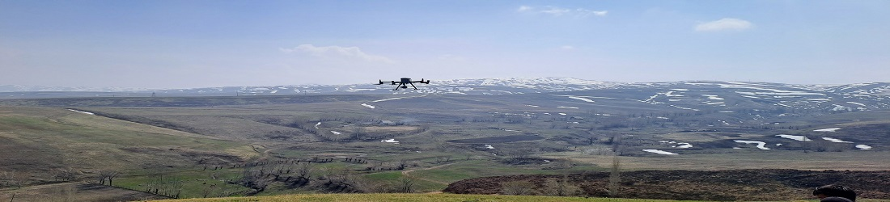
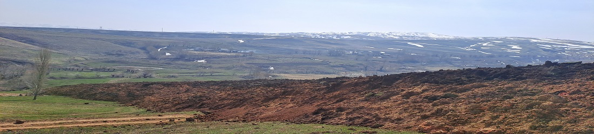
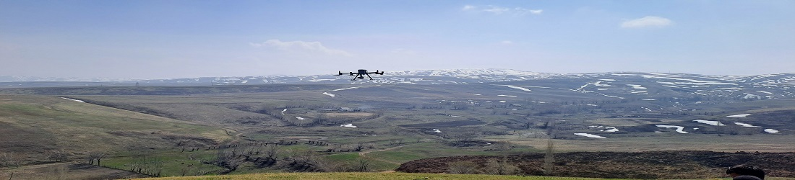
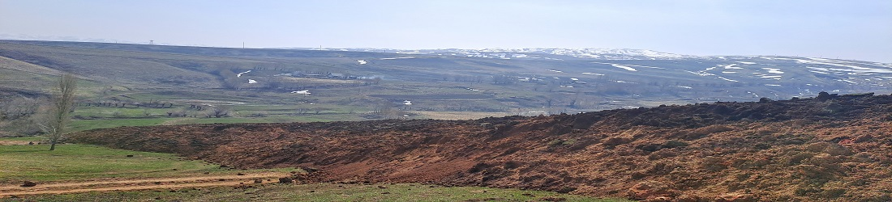

Новости
27.09.2023 2023-жылдын 25-26-27-сентябрь күндөрү КР ӨКМдин Өзгөчө кырдаалдарга мониторинг жүргүзүү...
23.08.2023 На дороге Ош — Сары-Таш — Иркештам сошел оползень. Она закрыта
23.07.2023 Выполнено 73% работ по защите от селей и наводнений. Разбивка по областям
22.05.2023 Беспилотники на службе. МЧС провело исследование опасных оползневых участков
14.04.2023 В горном селе Жалал-Абада 26 семей проживают на оползнеопасном участке. Фото
13.04.2023 Где самые опасные оползневые участки по Кыргызстану? Данные МЧС
13.04.2023 Из 1586 оползней 600 представляют угрозу для населенных пунктов, - замминистра ЧС
06.04.2023 Гигантский пласт стер с лица земли 63 дома в Узгене — близ зоны ЧП появилось озеро
30.03.2023 ӨЗГӨН: ЖЕР КӨЧКҮ ТҮШКӨН АЙМАКТАГЫ ТУРГУНДАРДАН АЙБЕК МАТКЕРИМОВ КАБАР АЛДЫ
28.03.2023 Өзгөн: жер көчкү жолду бөгөп калды
27.03.2023 В Жалал-Абадской области зарегистрировано около 2000 оползневых разломов
27.03.2023 Гигантский оползень в Узгене поглотил дом
24.03.2023 Оползень в Кыргызстане
24.03.2023 Над гигантским оползнем в Узгене подняли дрон
24.03.2023 В одном из сел Узгена объявили чрезвычайную ситуацию из-за сошедшего оползня...
23.03.2023 Өзгөндө жер көчкү түшүп, тургундар көчүрүлдү
23.03.2023 В селе Карл Маркс Узгенского района, где сошел оползень, объявлен режим ЧС I уровня
23.03.2023 Гигантский оползень за сутки преодолел 180 метров и движется на дома в Узгене
23.03.2023 В кыргызском селе объявлена чрезвычайная ситуация!
22.03.2023 ӨЗГӨНДӨ ири ЖЕР көчкү ЖҮРҮП үйлөргө 300 метрдей ЖЕТПЕЙ калып КУДАЙ сактады! АСМАНДАН тарылган ВИДЕО
22.03.2023 В Узгенском районе сошел оползень...